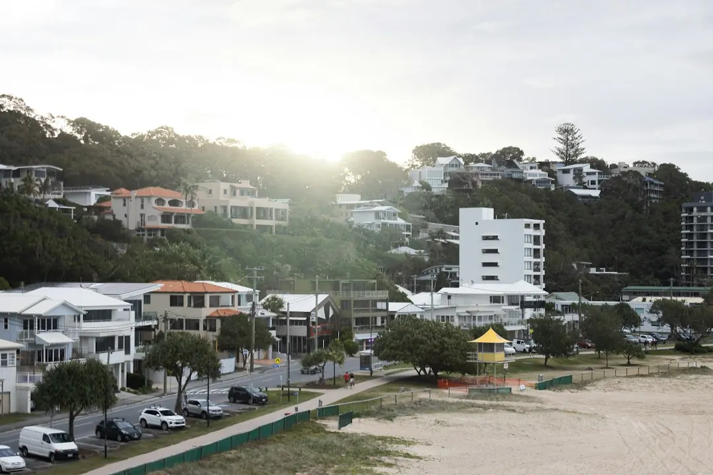

A supplied and installed concrete sleeper wall is listed at roughly $250 to $650 or more per square metre of wall face in 2026 Australian guides. A 1 metre Gold Coast wall is shown at about $295 to $590 per lineal metre, with $440 a typical figure. Engineering and certification, where needed, are listed at roughly $500 to $2,000. Final pricing depends on height, access, drainage, footings, soil and engineering.
For homeowners comparing concrete sleeper retaining walls gold coast options, the practical decisions are wall height, drainage, access, approval requirements, finish and the loads held above the structure.
Concrete Sleeper Retaining Walls Gold Coast Explained
Concrete Sleeper Retaining Walls Gold Coast describes concrete sleepers as precast units slotted between hot-dip galvanised steel posts, with each post concreted into the ground. That construction can suit a sloping block, a tired timber wall, a garden edge, or a boundary situation, but the site still determines the appropriate design.
Before requesting prices, record the approximate wall length and height, what the wall will hold back, whether an old wall needs removal, and how machinery could reach the work area. Soil type, site access and drainage can alter the scope. A driveway, pool, house or other load above the wall is a reason to ask whether the design needs engineering rather than treating the job as a basic garden wall.
- Note changes in ground level and the position of fences or boundaries.
- Ask how spoil, old sleepers and excavated material will be handled.
- Confirm whether the quoted work includes footings, drainage and reinstatement.
Choose the wall system and finish
Concrete sleepers are available in common heights of about 200 mm and in 1.6 m, 2.0 m and 2.4 m lengths, with sleepers listed as 75 mm or more thick. The final arrangement depends on post spacing and the wall design. Compared with treated pine, concrete does not rot, which is why replacing a leaning or deteriorating timber wall is a common project reason.
Appearance is another decision. Listed options include charcoal, timber-look and sandstone finishes. Plain grey sleepers can be painted with exterior masonry paint. A concrete block wall or a rock and boulder wall may create a different appearance and construction approach, so ask for a comparison based on the actual height, access and finish required rather than comparing material prices alone.
For a fence line, clarify whether the wall will support a Colorbond fence or act as under-fence plinths. Boundary work deserves a clear conversation about setbacks, drainage and responsibility where neighbouring land is involved.
Understand drainage and approvals
The published construction guidance specifies drainage behind a sleeper wall, using a slotted agricultural pipe at the base, clean gravel and geotextile fabric, with flow directed to an approved outlet. Ask for drainage to appear as a distinct line in the quote. Water management is part of the wall scope, not merely a finishing detail.
Retaining walls are described as regulated building work in Queensland. The published guide says walls that need building approval require a building certifier to issue it before work begins. Taller walls and walls carrying additional loads may need building approval and an engineer's design. Where engineering is required, the design must be done or directly supervised by a Registered Professional Engineer of Queensland.
Height rules can depend on the site and the proposed structure. Ask the installer or certifier which City of Gold Coast or Queensland requirements apply, who will arrange approval, and whether certification is included in the quoted amount.
Read an indicative quote carefully
The 2026 figures are guides, not a fixed offer. The supplied and installed range of about $250 to $650 or more per square metre refers to wall face area. A separate Gold Coast guide range of roughly $295 to $590 per lineal metre is given for a 1 metre high wall, with $440 identified as a typical figure. These measures are not interchangeable, so check whether a quote is calculated by square metre, lineal metre or a complete project price.
Costs can change with wall height, site access, drainage, footings and engineering. A useful quote should identify the sleeper type and finish, steel posts, excavation, concrete, drainage, removal of an existing wall, spoil disposal, approvals and any fence work. Engineering and certification are listed at roughly $500 to $2,000 per job where needed.
For an independent comparison of another local retaining-wall information page, see the Gold Coast sleeper-wall project guide.
Use the enquiry process to check fit
The published enquiry process asks for a suburb and a short description of the wall, including its rough length and height, what it holds back and whether an old wall is being removed. Photos are not required for the initial enquiry. The business states that an enquiry has no cost and no obligation to proceed.
After the initial information is provided, the site professional can discuss soil, access, drainage and approval questions. If the project proceeds, the published guidance says the installer should lodge a free Before You Dig Australia enquiry before post holes are installed, to check for underground pipes and cables.
Before accepting any quote, ask who is responsible for design, certification, council-related steps, drainage discharge and post-completion warranty terms. Those answers make competing proposals easier to compare.
- Describe the site. Record approximate length, height, ground level changes, soil clues, access limits and any old wall.
- Identify the load. State whether the wall supports a fence, driveway, pool, house, garden area or another surcharge.
- Request an itemised quote. Ask for separate amounts or inclusions for sleepers, posts, footings, drainage, excavation, removal and engineering.
- Check approval responsibility. Confirm whether a certifier or engineer is needed and who arranges those steps before construction.
- Compare on scope. Choose between proposals only after checking that their measurements and included works match.
| Decision | Concrete sleeper approach | Question to ask |
|---|---|---|
| Replacing timber | Does not rot like treated pine and can use existing wall alignment where suitable | Is removal of the old wall included? |
| Sloping block | Precast sleepers between galvanised steel posts can create retained levels | What access, excavation and footing work is required? |
| Boundary or fence line | May support a Colorbond fence or provide under-fence plinths | How will setbacks, drainage and neighbour interfaces be handled? |
| Taller or loaded wall | May require engineering, approval and certification | Who designs and certifies the wall before work begins? |
Common questions
What does a concrete sleeper retaining wall cost on the Gold Coast? The published 2026 guide gives roughly $295 to $590 per lineal metre installed for a 1 metre high wall, with $440 described as typical. It also lists about $250 to $650 or more per square metre of wall face in Australian guides.
Do concrete sleepers need drainage? The construction guidance specifies a slotted agricultural pipe, clean gravel and geotextile fabric behind the wall, directed to an approved outlet. Ask for these items to be shown in the quote.
Will a retaining wall need approval? Some walls do. Taller walls and walls carrying additional loads may need building approval and an engineer's design. Ask a certifier or installer to assess the proposed site.
Can concrete sleepers replace a timber wall? They can be considered when a treated-pine wall is leaning or deteriorating. Concrete sleepers do not rot like treated pine, but the replacement still needs site, drainage and footing assessment.
What information is needed for an initial quote? The published process asks for the suburb, approximate length and height, what the wall holds back and whether an old wall is being removed. Photos are not required at that stage.
This guide covers concrete sleeper retaining-wall choices, indicative costs, drainage, approvals, quoting and initial site questions on the Gold Coast.